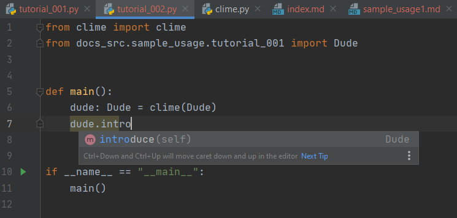
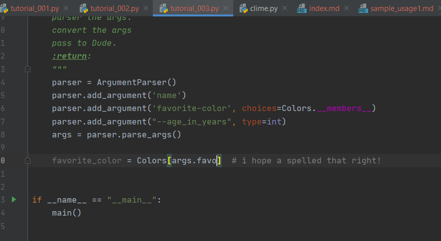

Features¶
Say you wrote an amazing class like this:
from enum import Enum
from typing import Optional
import attr
class Colors(Enum):
red = "red" # or 1 or auto()...
blue = "blue"
@attr.s(auto_attribs=True)
class Dude:
"""
Everything about the Dude!
"""
name: str
favorite_color: Colors
age_in_years: Optional[int] = None
def state_name(self):
print(f"hi! my name is {self.name}")
def profess_favorite_color(self):
print(
f"my favorite color is {self.favorite_color.name}"
) # we're dealing with Enums here!
def volunteer_age(self):
if self.age_in_years is not None: # 0 counts!
print(f"I am {self.age_in_years} years old.")
else:
print("A script never reveals its age")
def introduce(self):
self.state_name()
self.profess_favorite_color()
self.volunteer_age()
Which means you are probably going to have make a CLI...
Auto-generated, Argparse based, CLIs from attrs classes in one function..¶
With CliMe, all you have to do is this:
from clime import clime
from docs_src.sample_usage.tutorial_001 import Dude
def main():
"""
CliMe it!
:return:
"""
dude: Dude = clime(Dude)
dude.introduce()
if __name__ == "__main__":
main()
Check it:
$ python \docs_src\sample_usage\tutorial_002.py --help
usage:
Everything about the Dude!
positional arguments:
name type: <str>
{Colors.red,Colors.blue}
type: <Colors>
optional arguments:
-h, --help show this help message and exit
--age-in-years AGE_IN_YEARS
type: <int> (default: None)
did you see that?
- Argument names are taken from that attributes
- Argument types are taken from that type annotations, and converted for you!
- Help is taken from the docstrings.
- All you did was CliMe it!
No Duplicate code!¶
Making a custom ArgumentParser for Dude would look like this
from argparse import ArgumentParser
from docs_src.sample_usage.tutorial_001 import Dude, Colors
def main():
"""
make a parser.
parser the args.
convert the args
pass to Dude.
:return:
"""
# make the parser
parser = ArgumentParser()
# add the arguments. These must match the arguments from the class
# If Dude's signature changes, dont forget to update here!!!
parser.add_argument("name")
parser.add_argument("favorite_color", choices=Colors.__members__)
parser.add_argument("--age-in-years", type=int)
# parse
args = parser.parse_args()
# convert args not handled by ArgumentParser
favorite_color = Colors[args.favorite_color] # I hope I spelled that right!
# instantiate and go
dude: Dude = Dude(args.name, favorite_color, age_in_years=args.age_in_years)
dude.introduce()
if __name__ == "__main__":
main()
Code Completion!¶
Since CliMe returns an instance of your class, you IDE will be eager to help 
Compare that to the Namespace returned by ArgumentParser.parser_args(): 